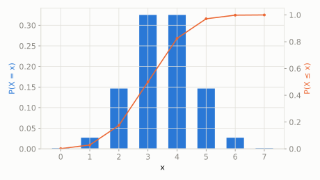

A jar has 20 candies, 7 of which are red, the rest are other colors. A kid grabs a big handful of 10 candies all at once, without looking.
What's the chance exactly 4 of the 10 candies they grabbed are red?
scipy.stats.hypergeom
Binomial's sibling for sampling *without* replacement. Once you grab a candy from the jar, it's gone, so each draw changes the odds for the next one -- unlike Binomial, where every trial has the exact same probability.
| parameter | default used here | meaning |
|---|---|---|
M | 20 | total population size |
n | 7 | number of 'success' items in the population |
N | 10 | number of items drawn (sample size) |
A jar has 20 candies, 7 of which are red, the rest are other colors. A kid grabs a big handful of 10 candies all at once, without looking.
What's the chance exactly 4 of the 10 candies they grabbed are red?
scipy.statsimport scipy.stats as stats
import numpy as np
dist = stats.hypergeom(M=20, n=7, N=10)
print('P(exactly 4 red candies):', round(dist.pmf(4), 4))
print('expected red candies:', round(dist.mean(), 4))